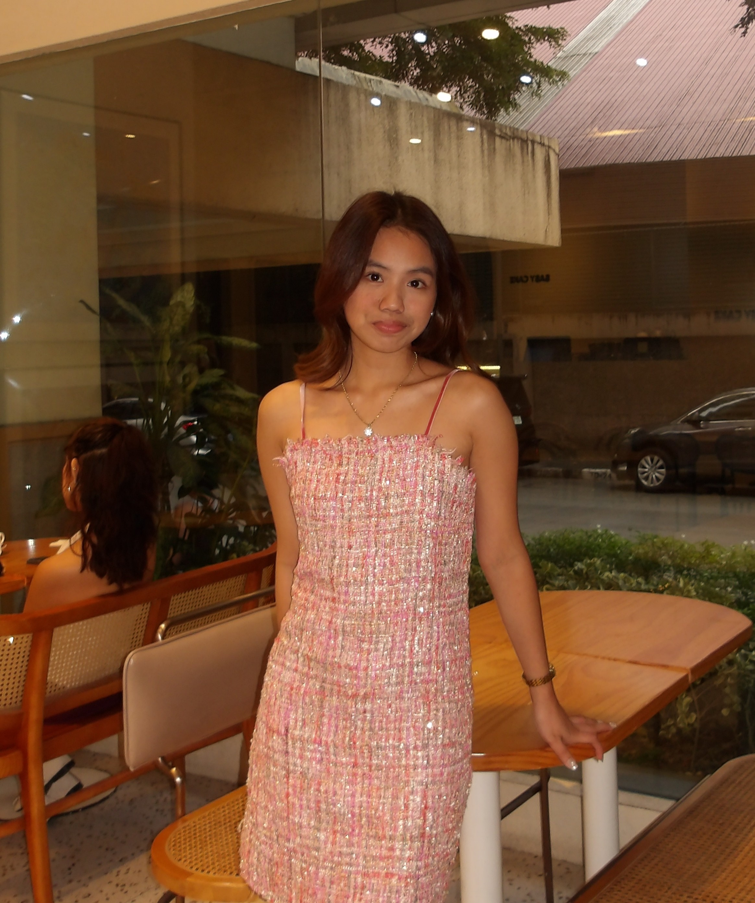

SQL Development
Queries & data manipulation
Turning data into meaningful insights.
Hello, I’m
Passionate about organizing, managing, and securing data
through reliable database solutions.
-- A little about me
SELECT name, career_goal, passion
FROM aspiring_dba
WHERE name = 'Cyrene Otadoy';
-- My focus
-- SQL • Data Integrity • Security
Hi! I'm Cyrene Otadoy, an IT student and aspiring Database Administrator with a passion for organizing, managing, and securing data.
I enjoy working with SQL, exploring database systems, and learning how to build efficient and reliable data solutions. I'm continuously improving my skills and eager to grow in the field of database administration.
Let’s connectThe skills and technologies I'm learning to work with data.
Queries & data manipulation
Structure & relationships
Database management
Protection & consistency
A collection of projects showcasing my skills
in database design, development, and management.
OPEN TO OPPORTUNITIES
Good things start with a conversation.
Say hello LinkedIn / Cyrene Rose Otadoy